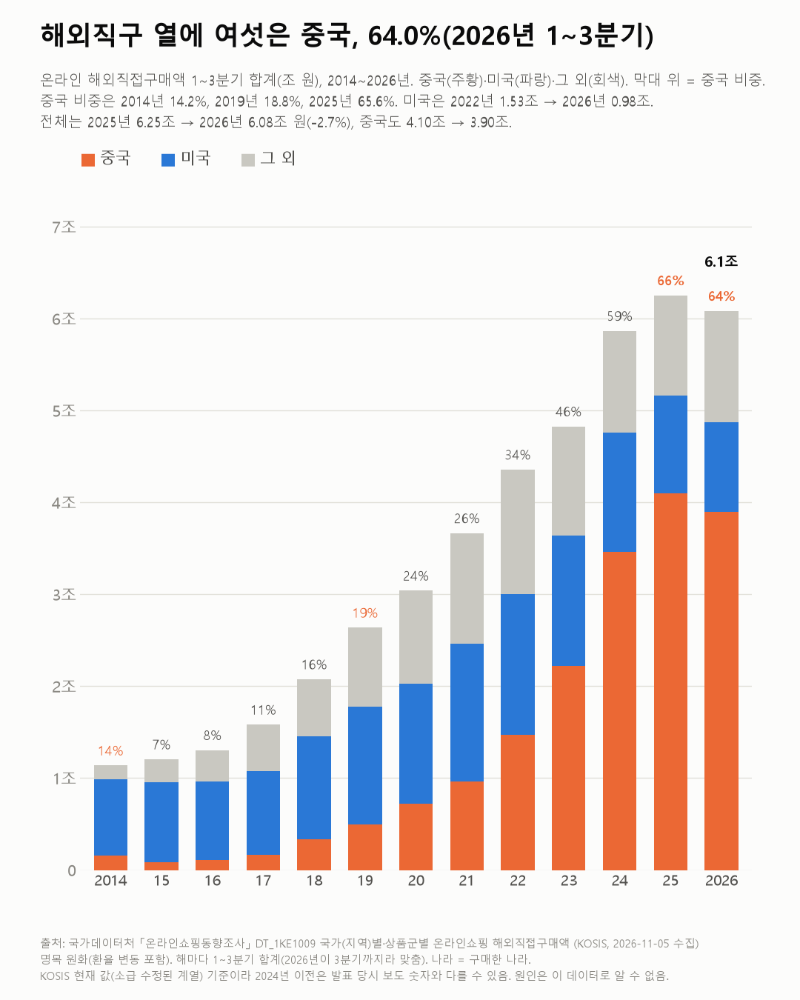
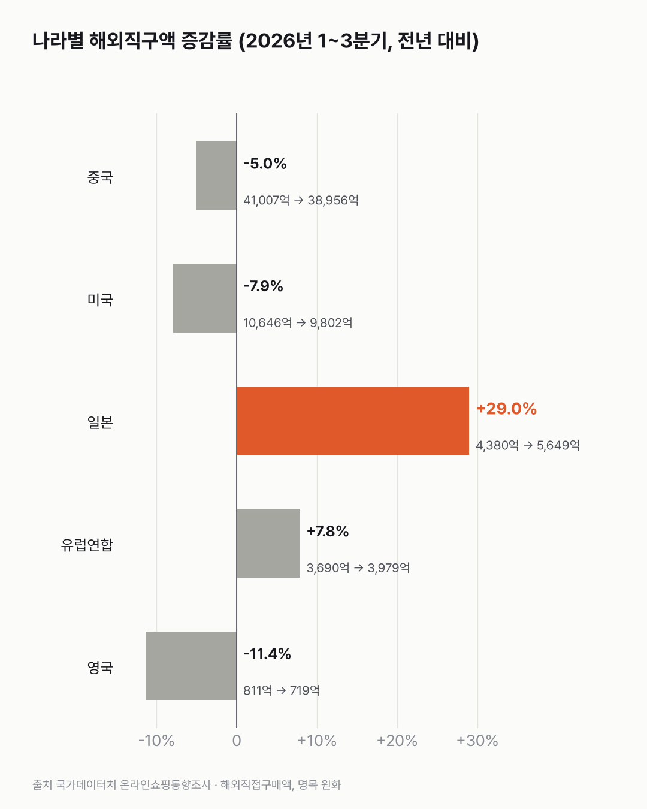

해외직구, 어느 나라에서 제일 많이 살까요?
해외직구는 이제 열에 여섯이 중국이에요. 올해는 사들인 금액이 조금 줄고, 해외에 판 금액이 늘었어요.

- 2026년 1~3분기 해외직구 6.08조 원 가운데 64.0%가 중국에서 산 거예요. 2014년엔 14.2%였어요.
- 전체 직구액은 2025년 같은 기간(6.25조 원)보다 2.7% 적어요. 일본에서 산 금액만 4,380억에서 5,649억 원으로 크게 늘었어요.
- 해외에 판 금액(역직구)은 같은 기간 2.50조에서 3.31조 원이 됐어요.
현관 앞에 직구 택배 상자가 놓여 있어요. 이 상자들이 어느 나라에서 왔는지, 분기별 금액으로 따라가 봤어요.
같은 1~3분기끼리 맞춰 보면 중국 비중은 2014년 14.2%, 2019년 18.8%, 2023년 46.0%, 2025년 65.6%였어요. 올해는 64.0%예요.
올해는 직구가 조금 줄었어요. 중국도 4.10조에서 3.90조 원으로 5.0% 줄었어요. 3분기만 보면 1조9,893억 원으로, 1년 전 같은 분기보다 6.3% 적어요. 2025년 한 해 전체는 8.51조 원으로 이 표에서 가장 많았던 해예요.
미국은 2022년 1~3분기 1.53조 원에서 올해 0.98조 원이 됐어요. 크게 늘어난 곳은 일본뿐이에요. 4,380억에서 5,649억 원으로 29.0% 늘었어요. 유럽연합은 7.8% 늘고, 영국은 11.4% 줄었어요.
무엇을 샀을까요? 올해 1~3분기 전체 직구의 2.41조 원(40%)이 의류·패션이에요. 2025년(2.67조)보다는 줄었어요. 중국 직구에선 생활·자동차용품이 2023년 0.13조 원에서 올해 0.49조 원이 됐어요. 처음 본 숫자였어요.
반대로 해외로 판 금액(역직구)은 1~3분기 기준 2.50조에서 3.31조 원이 됐어요. 직구액의 절반을 조금 넘어요.

역직구 물건이 어느 나라로 많이 가는지도 같은 조사에 있더라고요. 들어오는 상자와 나가는 상자가 같은 나라를 오가는지는 아직 세어 보지 못했어요.
이 숫자는 어디서 왔나요
출처
어떻게 셌나요
- 국가데이터처 「온라인쇼핑동향조사」의 분기 금액이에요.
- 나라는 물건을 산 나라(중국·미국·일본 등)예요. 국내 지역 비교가 아니에요.
- 2026년이 3분기까지라 해마다 1~3분기 합계로 맞췄어요. 금액은 명목 원화라 환율이 바뀌면 같이 바뀌어요.
- 중국 비중 = 중국 직구액 ÷ 전체 직구액(1~3분기 합)이에요.
- 2024년 이전 값은 발표 당시 보도와 달라요. 예를 들어 2024년 1분기는 보도 1조6,476억 원, KOSIS 현재 값 1조8,629억 원이에요. 표가 나중에 고쳐진 계열(국가 분류도 바뀜)이라 이 글은 KOSIS 현재 값만 썼어요.
한계 4가지
이 데이터로 말할 수 없는 것
- 금액이에요. 건수·사는 사람 수는 이 표에 없어요. 원화 금액이라 환율(엔·위안·달러) 변화가 섞여 있어요. 일본 직구가 늘어난 이유는 이 데이터로 알 수 없어요.
- 특정 쇼핑몰(알리·테무 등) 이름은 이 표에 없어요. '중국 직구 비중'과 '특정 회사 때문'은 달라요.
- 2024년 이전은 나중에 고쳐진 값이라 옛 기사 숫자와 맞지 않아요. 유럽연합·영국은 2023년부터 따로 집계돼 그 전과 비교하지 않았어요.
- 국내 온라인쇼핑 전체 흐름은 온라인쇼핑 글에서 다뤘어요.
새 글 나오면 받아 보기
피드 리더 앱에 이 사이트 주소를 한 번 넣어 두면, 새 글이 올라올 때 앱에 떠요. 가입이나 메일 주소는 필요 없어요.
받는 법 보기
- 피드 리더 앱을 하나 골라요. 새 글을 모아 보여 주는 앱이에요. 예를 들면 Feedly나 Inoreader가 있어요. 둘 다 무료고 웹·휴대폰에서 써요.
- 앱에서 '구독 추가'(+)를 누르고 아래 주소를 붙여 넣어요.
- 끝이에요. 새 글이 올라오면 앱 목록에 떠요.
https://protofu.github.io/opendata-insight/feed.xmlFeedly를 쓴다면 여기를 눌러 바로 추가할 수도 있어요.